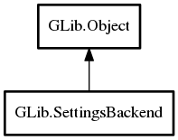

SettingsBackend
Object Hierarchy:
Description:
The SettingsBackend interface defines a generic interface for non-strictly-typed data that is stored in a hierarchy.
To implement an alternative storage backend for Settings, you need to implement the
SettingsBackend interface and then make it implement the extension point
G_SETTINGS_BACKEND_EXTENSION_POINT_NAME.
The interface defines methods for reading and writing values, a method for determining if writing of certain values will fail (lockdown) and a change notification mechanism.
The semantics of the interface are very precisely defined and implementations must carefully adhere to the expectations of callers that are documented on each of the interface methods.
Some of the GSettingsBackend functions accept or return a Tree. These trees always
have strings as keys and Variant as values.
g_settings_backend_create_tree is a convenience function to create suitable trees.
The GSettingsBackend API is exported to allow third-party implementations, but does not carry the same stability guarantees as the public GIO API. For this reason, you have to define the C preprocessor symbol g_settings_enable_backend before including `gio/gsettingsbackend.h`.
Namespace: GLib
Package: gio-2.0
Content:
Creation methods:
Inherited Members:
All known members inherited from class GLib.Object